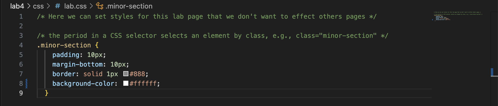
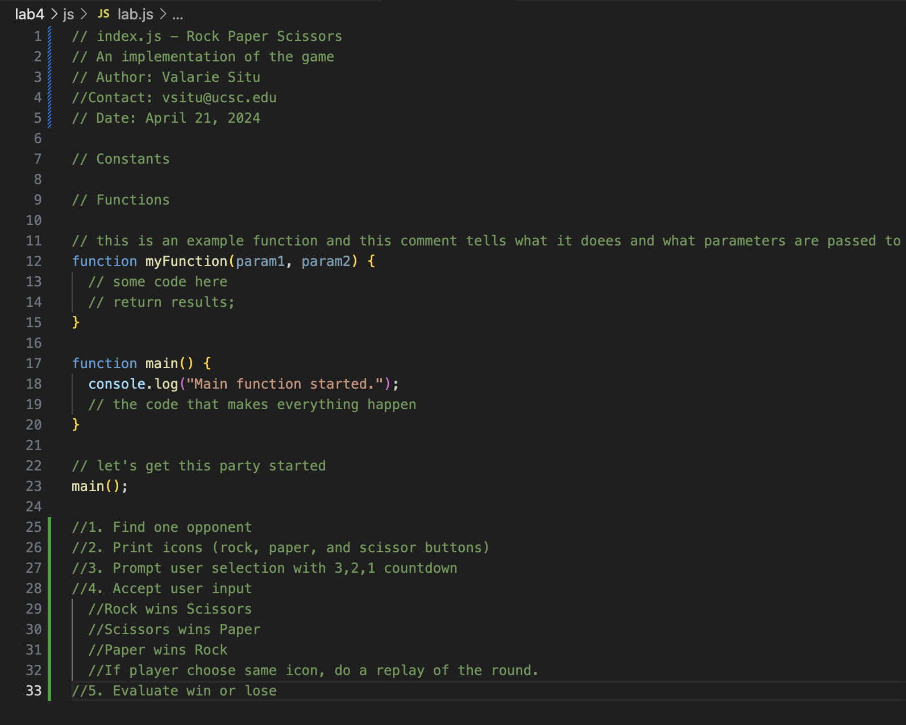
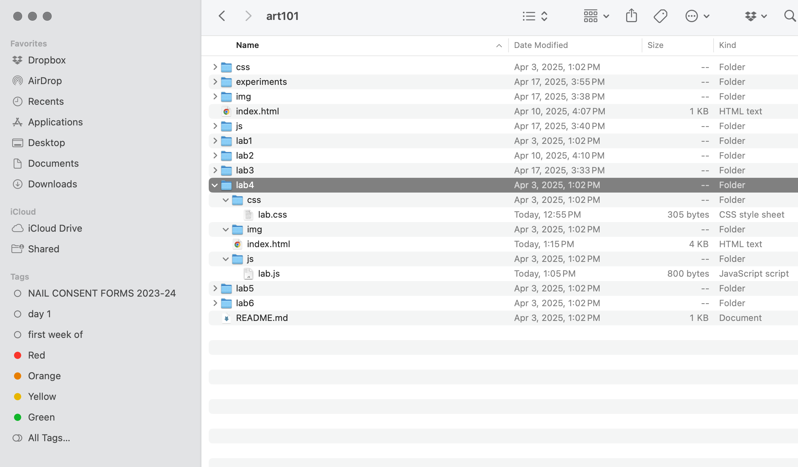
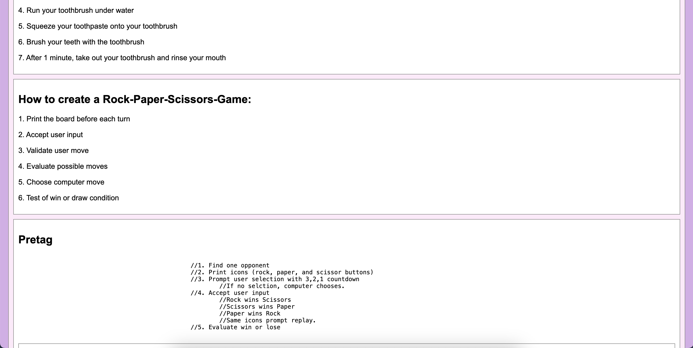

Lab 4 - Pseudocoding and Problem-solving
Pseudocode an Everyday Task
Create a list of high-level tasks. If necessary, break complicated tasks down into sub-steps
Pseudocode How to Brush Your Teeth
1. Find a place with water
2. Grab your toothpaste
3. Grab your toothbrush
4. Run your toothbrush under water
5. Squeeze your toothpaste onto your toothbrush
6. Brush your teeth with the toothbrush
7. After 1 minute, take out your toothbrush and rinse your mouth
How to create a Rock-Paper-Scissors-Game:
1. Print the board before each turn
2. Accept user input
3. Validate user move
4. Evaluate possible moves
5. Choose computer move
6. Test of win or draw condition
Pretag
//1. Find one opponent
//2. Print icons (rock, paper, and scissor buttons)
//3. Prompt user selection with 3,2,1 countdown
//If no selction, computer chooses.
//4. Accept user input
//Rock wins Scissors
//Scissors wins Paper
//Paper wins Rock
//Same icons prompt replay.
//5. Evaluate win or lose
Challenge
Restate the challenge of the lab here.
There was no challenge for this Lab 4. Mostly confused about where to put our outline and our mini-game.
Problems
What problems arose? How did you solve them?
Dylan and I solved these problems by asking each other questions, referencing our work with each other, and rereading the instructions once more.
Reflection
Put your reflections about this assignment here. How did it go? What kind of energy did you put into the assignment?
Lab 4 was fairly simple to understand and we were able to finish it within a few hours. We got detailed with the pseudocode mini-game and changing the CSS to our own personal styles, so I believe that showed the energy we put into this Lab.
Results
   Screenshot Description In Order: CSS (Top Left), JS (Top Right), Lab 4 File Structure (Bottom Left), & Lab 4 Published (Bottom Right)